vignettes/articles/Article_fr.Rmd
Article_fr.Rmd
Le package descriptio fournit des fonctions dédiées à la
description des associations statistiques entre variables. Elles
s’appuient sur des mesures de taille d’effet (dites aussi mesures
d’association).
Les principales mesures sont construites à partir de concepts simples (corrélations, proportion de variance expliquée), elles sont bornées (entre -1 et 1 ou entre 0 et 1) et ne sont pas sensibles aux effectifs.
Les principales mesures d’associations globales du package sont les suivantes.
Pour la relation entre deux variables catégorielles : le V de Cramér qui, contrairement au khi-deux par exemple, n’est pas sensible aux effectifs ou au nombre de modalités des variables. Il varie entre 0 (absence d’association) et 1 (association parfaite). Mis au carré, il peut être interprété comme la part de variation partagée entre deux variables.
Pour la relation entre deux variables continues : les corrélations de rang de Kendall (tau) ou de Spearman (rho), qui détectent les relations monotones entre variables, et non uniquement linéaires comme c’est le cas de la corrélation linéaire de Pearson. Elles varient entre -1 et 1. Une valeur absolue de 0 indique une absence d’association, une valeur absolue de 1 un association parfaite. Le signe indique le sens de la relation.
Pour la relation entre une variable catégorielle et une variable continue : le carré du rapport de corrélation (eta²). Il exprime la part de la variance de la variable continue “expliquée” par la variable catégorielle et varie entre 0 et 1.
En plus des mesures d’associations globales, on utilise aussi des mesures d’associations locales, c’est-à-dire au niveau des modalités des variables.
Pour la relation entre deux variables catégorielles: le coefficient phi mesure l’attraction ou la répulsion dans une case d’un tableau de contingence. Il varie entre -1 et 1. Une valeur absolue de 0 indique une absence d’association, une valeur absolue de 1 un association parfaite. Il y a attraction si le signe est positif, répulsion si le signe est négatif. Mis au carré, phi s’interprète comme la proportion de variance partagée par les deux variables binaires associées aux modalités étudiées. Contrairement à la valeur-test, phi n’est pas sensible à la taille de l’échantillon.
Pour la relation entre une variable catégorielle et une variable continue: la corrélation bisériale ponctuelle mesure l’amplitude de l’écart entre les moyennes de la variable continue selon que l’on appartient ou non à la modalité étudiée. Elle varie entre -1 et 1. Une valeur absolue de 0 indique une absence d’association, une valeur absolue de 1 un association parfaite. Le signe indique le sens de la relation. Mise au carré, la corrélation bisériale ponctuelle peut s’interpréter comme la proportion de variance de la variable continue “expliquée” par l’appartenance à la modalité de la variable catégorielle.
A noter que si l’on code les modalités des variables catégorielles sous la forme de variables binaires de valeurs 0 ou 1, le coefficient phi et la corrélation bisériale ponctuelle sont équivalentes au coefficient de corrélation de Pearson.
Pour plus de détails sur ces mesures de taille d’effet, voir :
Rakotomalala R., « Comprendre
la taille d’effet (effect size) »
Dans certaines fonctions de descriptio, les mesures
d’association peuvent être complétées par des tests de
permutation, qui relèvent de l’inférence combinatoire
et constituent une alternative non paramétrique aux tests de
signification de l’inférence fréquentiste. Un test de permutation se
déroule en plusieurs étapes.
On calcule une mesure d’association entre les deux variables étudiées.
On calcule la même mesure d’association à partir d’une version “permutée” des données, c’est-à-dire en “mélangeant” aléatoirement les valeurs de l’une des variables, afin de “casser” la relation entre les variables.
On répète l’étape 2 un grand nombre de fois. On obtient ainsi une distribution empirique (par opposition avec l’utilisation d’une distribution théorique par l’inférence fréquentiste) de la mesure d’association sous l’hypothèse H0 d’absence de relation entre les deux variables.
On compare le résultat de l’étape 1 avec la distribution obtenue en 3. La p-value du test de permutation est la proportion de valeurs de la distribution H0 qui sont plus extrêmes que la mesure d’association observée en 1.
Si on réalise l’ensemble des permutations possibles, le test de
permutation est dit “exact”. Dans la pratique, le temps de calcul
nécessaire est souvent trop important et on ne réalise qu’une partie des
permutations possibles, aboutissant à un test dit “approximatif”. Dans
les exemples qui suivent, le nombre de permutations est fixé à 100 pour
réduire le temps de calcul, mais il est conseillé d’augmenter ce nombre
pour obtenir des résultats plus précis et stables (par exemple
nperm=1000).
Pour illustrer les fonctions d’analyse des associations statistiques
de descriptio, nous utilisons des données sur le cinéma. Il
s’agit d’un échantillon de 1000 films sortis en France dans les années
2000, pour lesquels on connaît le budget, le genre, le pays d’origine,
la labellisation “art et essai”, la sélection en festival (Cannes,
Berlin ou Venise), la note moyenne des critiques intellectuelles
(d’après Allociné) et le nombre d’entrées en salles. Certaines de ces
variables sont continues, d’autres catégorielles.
library(descriptio)
data(Movies)
str(Movies)
'data.frame': 1000 obs. of 7 variables:
$ Budget : num 3.10e+07 4.88e+06 3.50e+06 1.63e+08 2.17e+07 ...
$ Genre : Factor w/ 9 levels "Action","Animation",..: 1 5 7 1 7 5 1 7 5 7 ...
$ Country : Factor w/ 4 levels "Europe","France",..: 4 2 2 1 2 2 4 4 2 4 ...
$ ArtHouse : Factor w/ 2 levels "No","Yes": 1 1 2 1 2 1 1 1 1 1 ...
$ Festival : Factor w/ 2 levels "No","Yes": 1 1 1 1 1 1 1 1 1 1 ...
$ Critics : num 3 1 3.75 3.75 3.6 2.75 1 1 1 3 ...
$ BoxOffice: num 1013509 24241 39376 6996996 493416 ...Le package propose plusieurs fonctions pour étudier la relation statistique entre deux variables, selon la nature (catégorielle ou continue) des ces variables.
La fonction assoc_twocat calcule :
res <- assoc.twocat(Movies$Country, Movies$ArtHouse, nperm=100)
res$tables
$freq
No Yes Sum
Europe 39 33 72
France 212 393 605
Other 6 20 26
USA 257 40 297
Sum 514 486 1000
$prop
No Yes Sum
Europe 3.9 3.3 7.2
France 21.2 39.3 60.5
Other 0.6 2.0 2.6
USA 25.7 4.0 29.7
Sum 51.4 48.6 100.0
$rprop
No Yes Sum
Europe 54.16667 45.83333 100
France 35.04132 64.95868 100
Other 23.07692 76.92308 100
USA 86.53199 13.46801 100
Sum 51.40000 48.60000 100
$cprop
No Yes Sum
Europe 7.587549 6.790123 7.2
France 41.245136 80.864198 60.5
Other 1.167315 4.115226 2.6
USA 50.000000 8.230453 29.7
Sum 100.000000 100.000000 100.0
$expected
No Yes
Europe 37.008 34.992
France 310.970 294.030
Other 13.364 12.636
USA 152.658 144.342
res$global
$chi.squared
[1] 220.1263
$cramer.v
[1] 0.4691762
$permutation.pvalue
[1] 0
$global.pem
[1] 64.04814
$GK.tau.xy
[1] 0.2201263
$GK.tau.yx
[1] 0.1537807
res$local
$std.residuals
No Yes
Europe 0.3274474 -0.3367479
France -5.6123445 5.7717531
Other -2.0143992 2.0716146
USA 8.4449945 -8.6848595
$adj.residuals
No Yes
Europe 0.487584 -0.487584
France -12.809366 12.809366
Other -2.927844 2.927844
USA 14.447862 -14.447862
$adj.res.pval
No Yes
Europe 0.625844564 0.625844564
France 0.000000000 0.000000000
Other 0.003413213 0.003413213
USA 0.000000000 0.000000000
$odds.ratios
No Yes
Europe 1.1270813 0.8872474
France 0.1661190 6.0197809
Other 0.2751969 3.6337625
USA 11.1500000 0.0896861
$local.pem
y
x No Yes
Europe 5.69273 -5.69273
France -51.55493 51.55493
Other -55.10326 55.10326
USA 72.28804 -72.28804
$phi
No Yes
Europe 0.01541876 -0.01541876
France -0.40506773 0.40506773
Other -0.09258656 0.09258656
USA 0.45688150 -0.45688150
$phi.perm.pval
No Yes
Europe 2.693816e-01 2.693816e-01
France 2.628066e-37 0.000000e+00
Other 9.272716e-04 9.272716e-04
USA 0.000000e+00 2.646462e-54
res$gather
var.y var.x freq prop rprop cprop expected std.residuals adj.residuals or pem phi perm.pval freq.x freq.y prop.x prop.y
1 No Europe 39 0.039 0.5416667 0.07587549 37.008 0.3274474 0.487584 1.1270813 5.69273 0.01541876 2.693816e-01 72 514 0.072 0.514
2 No France 212 0.212 0.3504132 0.41245136 310.970 -5.6123445 -12.809366 0.1661190 -51.55493 -0.40506773 2.628066e-37 605 514 0.605 0.514
3 No Other 6 0.006 0.2307692 0.01167315 13.364 -2.0143992 -2.927844 0.2751969 -55.10326 -0.09258656 9.272716e-04 26 514 0.026 0.514
4 No USA 257 0.257 0.8653199 0.50000000 152.658 8.4449945 14.447862 11.1500000 72.28804 0.45688150 0.000000e+00 297 514 0.297 0.514
[ reached 'max' / getOption("max.print") -- omitted 4 rows ]
La fonction ggassoc_crosstab présente le tableau de
contingence sous forme graphique, avec des rectangles dont la surface
correspond aux effectifs et le gradient de couleurs aux
attractions/répulsions (à partir d’une des mesures d’association locale
proposées dans assoc.twocat, ici les coefficients phi). Le
label “art et essai” est nettement sur-représenté parmi les films
français et sous-représenté parmi les films étatsuniens.
ggassoc_crosstab(Movies, ggplot2::aes(x=Country, y=ArtHouse))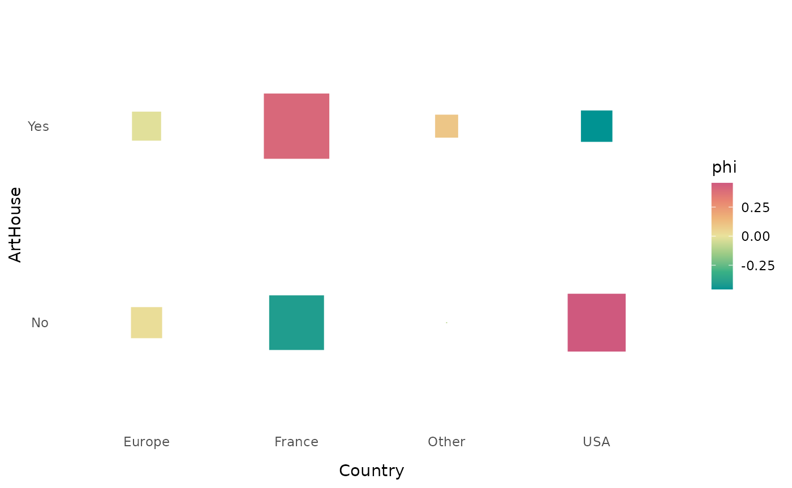
La fonction ggassoc_phiplot propose une autre manière de
représenter les attractions/répulsions. La largeur des rectangles
correspond aux effectifs de la variable x, leur hauteur aux associations
locales (par défaut, les coefficients phi). Les rectangles sont colorés
en noir lorsqu’il y a attraction, en blanc lorsqu’il y a répulsion.
ggassoc_phiplot(Movies, ggplot2::aes(x=Country, y=ArtHouse))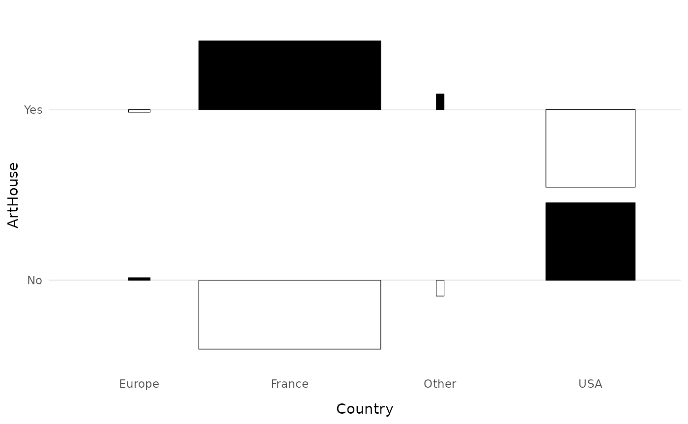
La fonction ggassoc_bertin est inspirée des principes de
sémiologie graphique de Jacques Bertin pour la représentation d’une
matrice de données et de l’outil AMADO
Online. La hauteur des barres correspond aux probabilités
conditionnelles de y étant donné x. Elles sont colorées en noir lorsque
les probabilités conditionnelles sont supérieures aux probabilités
marginales de y. La largeur des barres peut être ajustée de manière à
être proportionnelle aux probabilités marginales de x.
ggassoc_bertin(Movies, ggplot2::aes(x=Country, y=ArtHouse), prop.width = TRUE, add.gray = TRUE)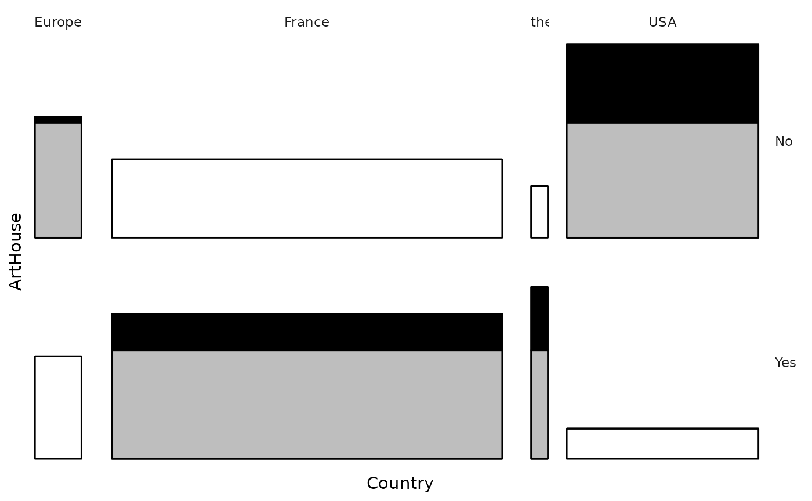
La fonction ggassoc_assocplot produit un “graphique
d’association” tel que proposé par Cohen (1980) et Friendly (1992). La
largeur des barres est proportionnelle à la racine carrée des effectifs
théoriques. La hauteur des barres et le gradient de couleur sont
proportionnels aux associations locales. Si ces associations locales
sont mesurées par les résidus de Pearson (choix par défaut), la surface
des barres est proportionnelle à la différence entre effectifs
théoriques et effectifs observés.
Lorsque le nombre de modalités des variables est élevé, comme ici lorsqu’on croise le genre du film et son origine géographique, il peut être utile des trier les lignes et/ou les colonnes de manière à ce que celles qui se ressemblent soient proches.
On constate que les films d’action, d’animation, de science-fiction et d’horreur sont sur-représentés parmi les films étatsuniens, et que les documentaires, les drames et les comédies dramatiques sont sur-représentés parmi les films français.
ggassoc_assocplot(Movies, ggplot2::aes(x=Country, y=Genre), sort = "both")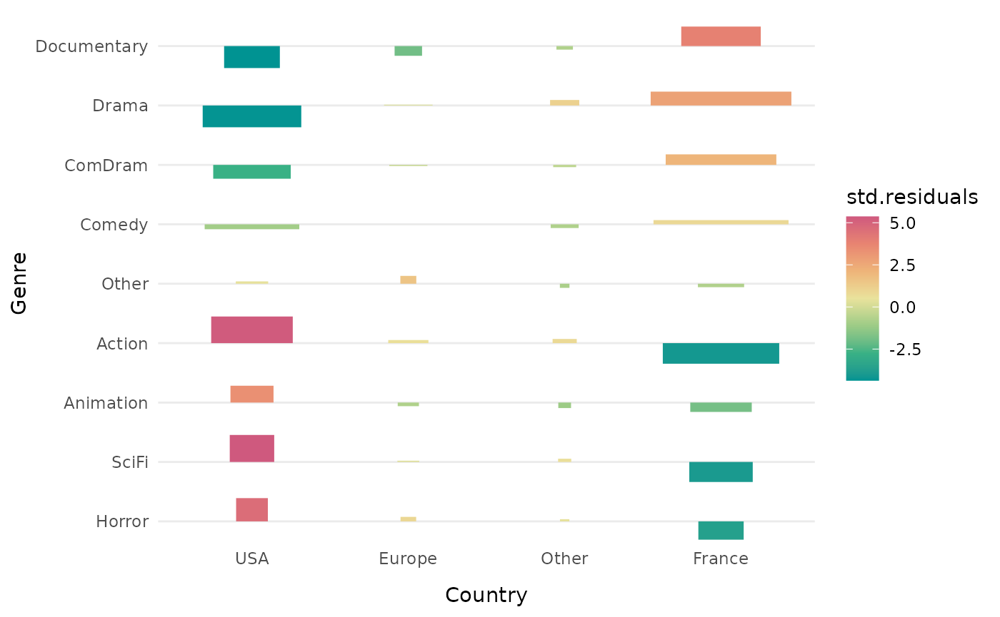
La fonction ggassoc_chiasmogram dessine un
“chiasmogramme”, une représentation graphique proposée par Bozon et
Héran (1988). La largeur des rectangles est proportionnelle aux
probabilités marginales de la variable en colonne, leur hauteur est
proportionnelle aux probabilités marginales de la variable en ligne. La
surface des rectangles est donc proportionnelle aux effectifs
théoriques. Les rectangles sont colorés selon le degré d’association
locale (par défaut les coefficients phi).
ggassoc_chiasmogram(Movies, ggplot2::aes(x=Country, y=Genre), sort = "both")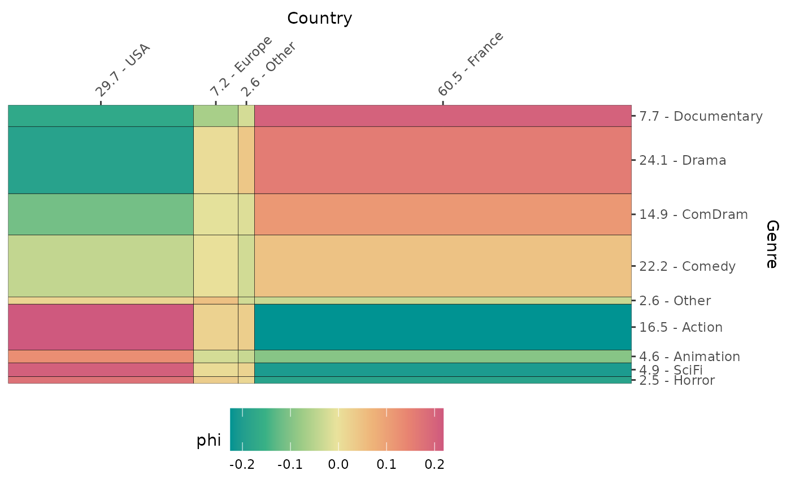
La fonction ggassoc_marimekko produit des graphiques
marimekko, dits aussi en mosaïque. La largeur des barres est
proportionnelle aux probabilités marginales de la variables x, leur
hauteur aux probabilités conditionnelles de la variable y étant donné
x.
ggassoc_marimekko(Movies, ggplot2::aes(x=Country, y=Genre), sort = "both", type = "classic")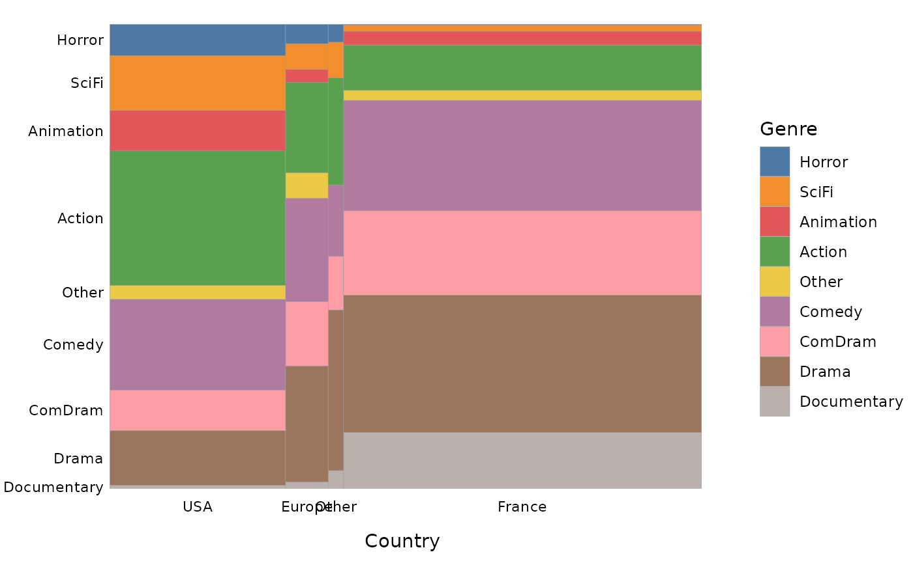
On peut choisir de colorer les barres selon le degré d’association locale (ici les coefficients phi), comme proposé par Friendly (1994).
ggassoc_marimekko(Movies, ggplot2::aes(x=Country, y=Genre), sort = "both", type = "shades")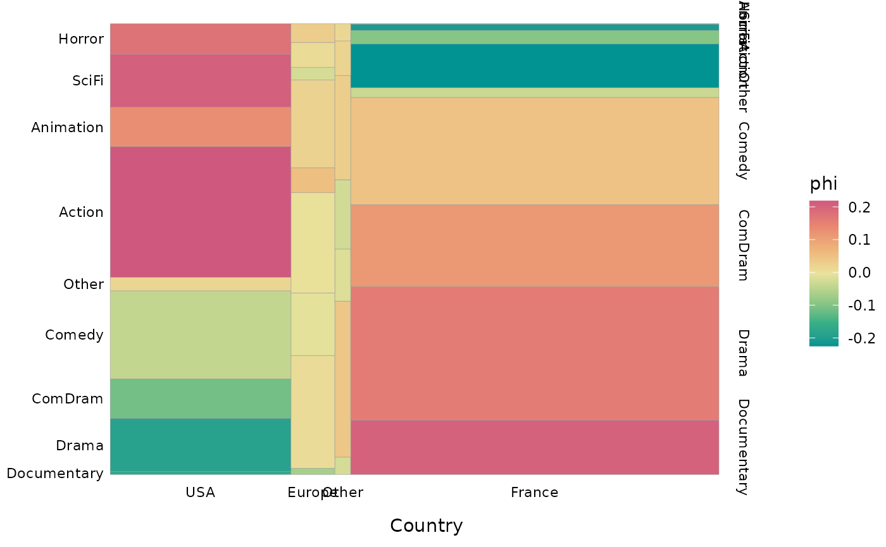
On peut également choisir de remplacer le gradient de couleurs par des textures plus ou moins denses selon le degré d’association locale.
ggassoc_marimekko(Movies, ggplot2::aes(x=Country, y=Genre), sort = "both", type = "patterns")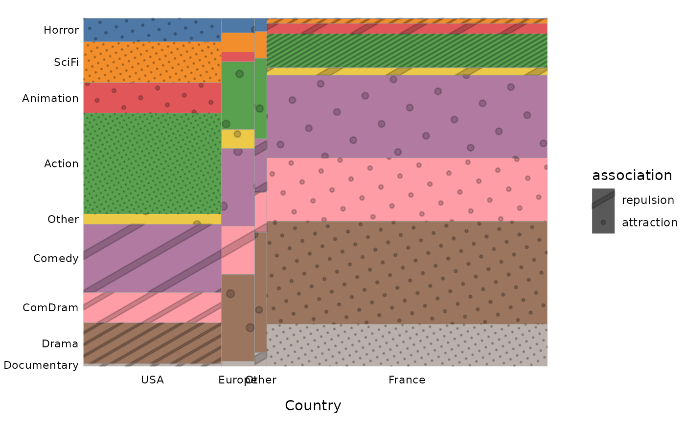
La fonction assoc_catcont calcule :
assoc.catcont(Movies$Country, Movies$Critics, nperm=100)
$summary
mean sd min q1 median q3 max mad
Europe 2.886343 0.7328983 1.4 2.458333 3.000000 3.40 4.833333 0.5000000
France 2.923361 0.8469909 1.0 2.333333 3.000000 3.50 5.000000 0.6000000
Other 3.041026 0.8039995 1.0 2.425000 3.208333 3.65 4.400000 0.6000000
USA 2.686700 0.8601259 1.0 2.000000 2.666667 3.20 5.000000 0.6666667
$eta.squared
[1] 0.0169216
$permutation.pvalue
[1] 5.174048e-08
$cor
Europe France Other USA
0.011 0.102 0.036 -0.128
$cor.perm.pval
Europe France Other USA
3.544689e-01 8.365968e-04 1.534696e-01 1.238784e-05
$test.values
Europe France Other USA
0.340764 3.218873 1.140324 -4.033595
$test.values.pval
Europe France Other USA
7.332813e-01 1.286957e-03 2.541511e-01 5.492984e-05
La fonction ggassoc_boxplot représente la relation entre
les variables sous forme de boîtes à moustaches (box-plots)
et/ou de distributions “en violons”.
ggassoc_boxplot(Movies, ggplot2::aes(x=Country, y=Critics))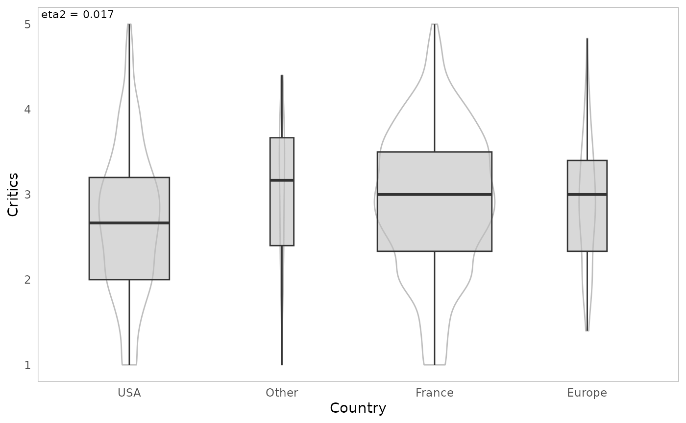
La fonction assoc_twocont calcule les corrélations de
rang de Kendall et de Spearman et la corrélation linéaire de Pearson,
ainsi que les p-values des tests de permutation correspondants.
assoc.twocont(Movies$Budget, Movies$BoxOffice, nperm=10)
pearson spearman kendall
value 0.6053018 0.7084613 0.5184719
permutation.pvalue 0.0000000 0.0000000 0.0000000
La fonction ggassoc_scatter représente la relation entre
les deux variables sous forme d’un nuage de points, avec une
approximation par lissage (avec la méthode de “Generalized Additive
Model”).
ggassoc_scatter(Movies, ggplot2::aes(x=Budget, y=BoxOffice)) 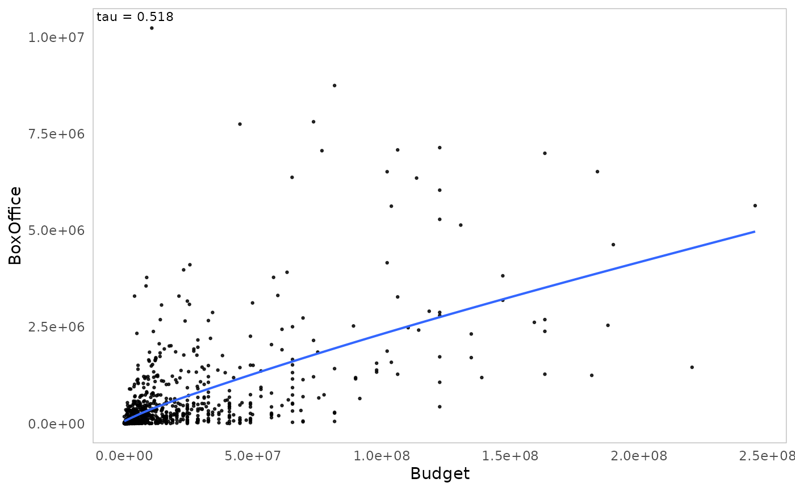
Bien souvent, on n’étudie pas seulement deux variables, mais un
ensemble plus important de variables. Lorsqu’une de ces variables a le
statut de variable “à expliquer”, on utilise généralement des modèles de
régression ou, éventuellement, des modèles d’apprentissage surpervisé
(voir la vignette du package moreparty pour un exemple). Il
est cependant indispensable de bien connaître l’ensemble des relations
bivariées du jeu de données avant de passer à une approche “toute chose
égale par ailleurs”.
On notera d’ailleurs que si on fait ce travail de manière minutieuse,
en y ajoutant éventuellement l’analyse descriptive des relations entre
trois ou quatre variables, on s’aperçoit souvent que le surplus de
connaissance apporté par les modèles de régression est assez
limité.
La fonction assoc.yx calcule l’association globale entre
Y et chacune des variables de X, ainsi que pour toutes les paires de
variables de X.
assoc.yx(Movies$BoxOffice, Movies[,-7], nperm=10)
$YX
variable measure association permutation.pvalue
1 Genre Eta2 0.173 0.000
2 ArtHouse Eta2 0.075 0.000
3 Country Eta2 0.048 0.000
4 Budget Kendall tau 0.518 0.000
5 Critics Kendall tau 0.006 0.271
6 Festival Eta2 0.000 0.787
$XX
variable1 variable2 measure association permutation.pvalue
1 Genre ArtHouse Cramer V 0.554 0.000
2 Country ArtHouse Cramer V 0.469 0.000
3 Genre Country Cramer V 0.275 0.000
4 ArtHouse Festival Cramer V 0.229 0.000
5 Budget Country Eta2 0.287 0.000
6 Budget Genre Eta2 0.281 0.000
7 ArtHouse Critics Eta2 0.236 0.000
8 Budget ArtHouse Eta2 0.181 0.000
9 Genre Critics Eta2 0.090 0.000
10 Festival Critics Eta2 0.041 0.000
11 Country Critics Eta2 0.017 0.000
12 Budget Critics Kendall tau -0.178 0.000
13 Genre Festival Cramer V 0.183 0.000
14 Budget Festival Eta2 0.003 0.260
15 Country Festival Cramer V 0.035 0.779
Les fonctions catdesc et condesc permettent de
rentrer plus dans le détail des relations, en passant au niveau des
modalités.
catdesc traite les cas où Y est une variable
catégorielle. Pour une variable catégorielle X1, elle calcule, pour une
modalité de Y et une modalité de X1 données :
Les résultats sont triés par association locale décroissante et peuvent être filtrés pour ne conserver que les associations supérieures à un seuil donné (en valeur absolue).
Pour une variable continue X2, pour une modalité de Y donnée, elle calcule :
La dispersion est mesurée par l’écart absolu médian (MAD), c’est-à-dire la médiane des écarts absolus par rapport à la médiane. La médiane et le MAD sont des indicateurs dits “robustes”, non sensibles aux valeurs aberrantes, mais on peut choisir d’utiliser la moyenne et l’écart-type à la place.
res <- catdesc(Movies$Festival, Movies[,-5], nperm = 10)
res$bylevel$Yes
$categories
categories freq pct.y.in.x pct.x.in.y overall.pct.x phi pvalue
1 ArtHouse.Yes 68 14.0 88.3 48.6 0.229 0.00000
2 Genre.Drama 36 14.9 46.8 24.1 0.153 0.00000
3 Genre.Other 3 11.5 3.9 2.6 0.024 0.16640
4 Country.Europe 7 9.7 9.1 7.2 0.021 0.30388
5 Country.France 49 8.1 63.6 60.5 0.019 0.24566
6 Genre.ComDram 13 8.7 16.9 14.9 0.016 0.29241
7 Genre.Action 13 7.9 16.9 16.5 0.003 0.45293
8 Country.Other 2 7.7 2.6 2.6 0.000 0.19093
9 Genre.SciFi 3 6.1 3.9 4.9 -0.013 0.27505
10 Country.USA 19 6.4 24.7 29.7 -0.032 0.23120
[ reached 'max' / getOption("max.print") -- omitted 5 rows ]
$continuous.var
variables median.in.category overall.median mad.in.category overall.mad correlation pvalue
1 Critics 3.5 3.0 0.67 0.6 0.204 0.00000
2 BoxOffice 198796.0 107326.5 181590.00 104060.0 0.008 0.44497
3 Budget 7000000.0 6127500.0 4438000.00 5156921.0 -0.057 0.19705condesc traite les cas où Y est une variable continue. Pour
une variable catégorielle X1, elle calcule :
Les résultats sont triés par corrélations bisériales ponctuelles décroissantes et peuvent être filtrés pour ne conserver que les associations supérieures à un seuil donné (en valeur absolue).
Pour les variables continues de X, elle calcule la corrélation (par défaut le tau de Kendall).
condesc(Movies$BoxOffice, Movies[,-7], nperm=10)
$variables
variable measure association pvalue
1 Genre Eta2 0.173 0.00000
2 ArtHouse Eta2 0.075 0.00000
3 Country Eta2 0.048 0.00000
4 Budget Kendall tau 0.518 0.00000
5 Critics Kendall tau 0.006 0.51260
6 Festival Eta2 0.000 0.73323
$categories
categories median.in.category overall.median mad.in.category overall.mad correlation pvalue
1 Genre.SciFi 680900.0 107326.5 607448.0 104060 0.294 0.00000
2 ArtHouse.No 264200.0 107326.5 232183.0 104060 0.274 0.00000
3 Genre.Animation 668896.0 107326.5 633265.0 104060 0.211 0.00000
4 Country.USA 328559.0 107326.5 274892.0 104060 0.192 0.00000
5 Genre.Action 240080.0 107326.5 202793.0 104060 0.087 0.00123
6 Country.Europe 108121.5 107326.5 104606.5 104060 0.068 0.00000
7 Festival.Yes 198796.0 107326.5 181590.0 104060 0.008 0.26023
8 Genre.Comedy 202090.0 107326.5 191819.0 104060 0.004 0.48171
9 Genre.Other 186084.5 107326.5 171739.5 104060 -0.005 0.40468
10 Festival.No 102726.0 107326.5 99642.0 104060 -0.008 0.39491
[ reached 'max' / getOption("max.print") -- omitted 7 rows ]
La fonction darma présente les résultats sous une forme
proche de celle d’un tableau de résultats d’une régression.
Lorsque la variable Y est continue, la fonction calcule :
res <- darma(Movies$BoxOffice, Movies[,-7], nperm=10)| variable | category | median | association | perm.pvalue |
|---|---|---|---|---|
| Budget | NA | 0.518 | 0.000 | |
| Genre | Action | 240080.0 | 0.087 | 0.000 |
| Animation | 668896.0 | 0.211 | 0.000 | |
| Other | 186084.5 | -0.005 | 0.500 | |
| ComDram | 67341.0 | -0.114 | 0.000 | |
| Comedy | 202090.0 | 0.004 | 0.465 | |
| Documentary | 9303.0 | -0.108 | 0.003 | |
| Drama | 37160.0 | -0.162 | 0.000 | |
| Horror | 302635.0 | -0.015 | 0.250 | |
| SciFi | 680900.0 | 0.294 | 0.000 | |
| Country | Europe | 108121.5 | 0.068 | 0.014 |
| France | 57140.0 | -0.211 | 0.000 | |
| Other | 55643.0 | -0.013 | 0.260 | |
| USA | 328559.0 | 0.192 | 0.000 | |
| ArtHouse | No | 264200.0 | 0.274 | 0.000 |
| Yes | 35837.5 | -0.274 | 0.000 | |
| Festival | No | 102726.0 | -0.008 | 0.370 |
| Yes | 198796.0 | 0.008 | 0.390 | |
| Critics | NA | 0.006 | 0.323 |
Lorsque la variable Y est catégorielle, la fonction calcule :
res <- darma(Movies$Festival, Movies[,-5], target=2, nperm=10)| variable | category | percent | association | perm.pvalue |
|---|---|---|---|---|
| Budget | NA | -0.057 | 0.039 | |
| Genre | Action | 7.9 | 0.003 | 0.444 |
| Animation | 2.2 | -0.046 | 0.076 | |
| Other | 11.5 | 0.024 | 0.180 | |
| ComDram | 8.7 | 0.016 | 0.340 | |
| Comedy | 2.7 | -0.100 | 0.000 | |
| Documentary | 2.6 | -0.055 | 0.002 | |
| Drama | 14.9 | 0.153 | 0.000 | |
| Horror | 0.0 | -0.046 | 0.019 | |
| SciFi | 6.1 | -0.013 | 0.215 | |
| Country | Europe | 9.7 | 0.021 | 0.251 |
| France | 8.1 | 0.019 | 0.314 | |
| Other | 7.7 | 0.000 | 0.610 | |
| USA | 6.4 | -0.032 | 0.127 | |
| ArtHouse | No | 1.8 | -0.229 | 0.000 |
| Yes | 14.0 | 0.229 | 0.000 | |
| Critics | NA | 0.204 | 0.000 | |
| BoxOffice | NA | 0.008 | 0.672 |
Pour finir, les fonctions ggassoc_* sont prévues pour
pouvoir s’intégrer dans les matrices de graphiques du package GGally. Il est
donc possible de les utiliser pour représenter dans un seul graphique
l’ensemble des relations bivariées d’un groupe de variables.
library(GGally)
ggpairs(Movies,
lower = list(continuous = ggassoc_scatter,
combo = ggassoc_boxplot,
discrete = wrap(ggassoc_crosstab, max.size = 3)),
upper = list(continuous = ggassoc_scatter,
combo = ggassoc_boxplot,
discrete = wrap(ggassoc_crosstab, max.size = 3)),
diag = list(continuous = wrap("diagAxis", gridLabelSize = 3),
discrete = wrap("diagAxis", gridLabelSize = 3)))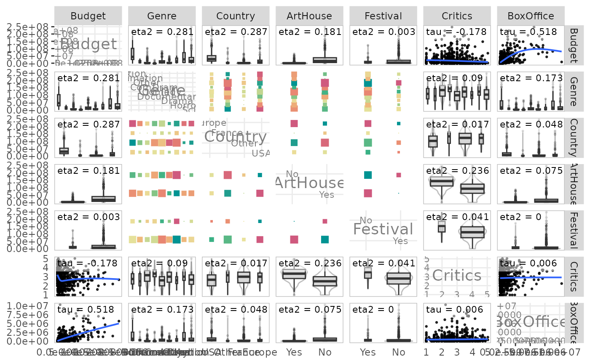